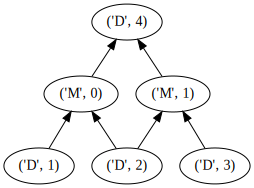
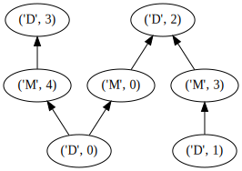
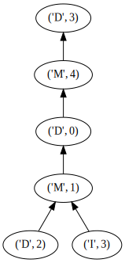

Quickstart¶
Preliminaries¶
Imports¶
import mercs import numpy as np from mercs.tests import load_iris, default_dataset from mercs.core import Mercs import pandas as pd
Fit¶
Here a small MERCS testdrive for what I suppose you'll need. First, let us generate a basic dataset. Some utility-functions are integrated in MERCS so that goes like this
train, test = default_dataset(n_features=10) df = pd.DataFrame(train) df.head()
| 0 | 1 | 2 | 3 | 4 | 5 | 6 | 7 | 8 | 9 | 10 | |
|---|---|---|---|---|---|---|---|---|---|---|---|
| 0 | 0.675737 | -0.476428 | 3.581450 | 0.183020 | -1.777475 | 0.136767 | 1.160297 | 0.129889 | 1.260818 | -1.564195 | 0.0 |
| 1 | 1.173828 | 0.633868 | 1.371909 | -1.326919 | 1.293080 | 1.524197 | 1.310965 | -3.103991 | -0.214067 | 1.064141 | 1.0 |
| 2 | -5.643059 | 1.305686 | 4.253110 | -2.597300 | 3.752776 | -0.800193 | 1.173064 | 0.926055 | -3.926815 | -4.166201 | 0.0 |
| 3 | 0.649619 | 1.774041 | 1.844340 | 1.939269 | 2.874112 | 1.844517 | -1.189195 | -1.955451 | -3.466255 | 3.035215 | 1.0 |
| 4 | -0.839893 | -1.723207 | -0.679333 | 2.020422 | -1.034357 | 0.416687 | 1.367039 | 0.497800 | -1.313362 | -0.440382 | 1.0 |
df.describe()
| 0 | 1 | 2 | 3 | 4 | 5 | 6 | 7 | 8 | 9 | 10 | |
|---|---|---|---|---|---|---|---|---|---|---|---|
| count | 800.000000 | 800.000000 | 800.000000 | 800.000000 | 800.000000 | 800.000000 | 800.000000 | 800.000000 | 800.000000 | 800.000000 | 800.000000 |
| mean | 0.466173 | 0.001240 | 0.624970 | -0.005191 | 0.450649 | 0.038921 | -0.455200 | 0.072851 | -0.472249 | -0.418480 | 0.491250 |
| std | 2.036365 | 2.150285 | 2.168501 | 2.086619 | 1.953769 | 2.099301 | 2.078551 | 2.014238 | 1.898000 | 2.052702 | 0.500236 |
| min | -7.455322 | -6.817417 | -6.925613 | -7.030162 | -5.708949 | -6.865339 | -7.238353 | -6.184692 | -6.159434 | -8.705917 | 0.000000 |
| 25% | -0.954399 | -1.509110 | -0.816581 | -1.380624 | -0.691509 | -1.329481 | -1.756418 | -1.224983 | -1.703273 | -1.797529 | 0.000000 |
| 50% | 0.451760 | 0.075555 | 0.674027 | 0.118554 | 0.547505 | 0.108292 | -0.493528 | 0.174550 | -0.568166 | -0.292757 | 0.000000 |
| 75% | 1.847537 | 1.384226 | 2.148864 | 1.398455 | 1.820179 | 1.454181 | 0.836809 | 1.497582 | 0.712452 | 1.053721 | 1.000000 |
| max | 6.365330 | 7.601766 | 6.390253 | 8.237993 | 7.501492 | 7.021821 | 6.489389 | 6.832418 | 6.903293 | 5.101133 | 1.000000 |
Now let's train a MERCS model. To know what options you have, come talk to me or dig in the code. For induction, nb_targets and nb_iterations matter most. Number of targets speaks for itself, number of iterations manages the amount of trees for each target. With n_jobs you can do multi-core learning (with joblib, really basic, but works fine on single machine), that makes stuff faster. fraction_missing sets the amount of attributes that is missing for a tree. However, this parameter only has an effect if you use the random selection algorithm. The alternative is the base algorithm, which selects targets, and uses all the rest as input.
clf = Mercs( max_depth=4, selection_algorithm="random", fraction_missing=0.6, nb_targets=2, nb_iterations=2, n_jobs=8, verbose=1, inference_algorithm="own", max_steps=8, prediction_algorithm="it", )
You have to specify the nominal attributes yourself. This determines whether a regressor or a classifier is learned for that target. MERCS takes care of grouping targets such that no mixed sets are created.
nominal_ids = {train.shape[1]-1} nominal_ids
{10}
clf.fit(train, nominal_attributes=nominal_ids)
/cw/dtaijupiter/NoCsBack/dtai/elia/mercs/src/mercs/algo/induction.py:191: UserWarning: Training is being parallellized using Joblib. Number of jobs = 8 warnings.warn(msg) [Parallel(n_jobs=8)]: Using backend LokyBackend with 8 concurrent workers. [Parallel(n_jobs=8)]: Done 10 out of 12 | elapsed: 2.4s remaining: 0.5s [Parallel(n_jobs=8)]: Done 12 out of 12 | elapsed: 2.4s finished /cw/dtaijupiter/NoCsBack/dtai/elia/miniconda/envs/rwrf/lib/python3.7/site-packages/sklearn/metrics/classification.py:1437: UndefinedMetricWarning: F-score is ill-defined and being set to 0.0 in labels with no predicted samples. 'precision', 'predicted', average, warn_for)
So, now we have learned trees with two targets, but only a single target was nominal. If MERCS worked well, it should have learned single-target classifiers (for attribute 4) and multi-target regressors for all other target sets.
for idx, m in enumerate(clf.m_list): msg = """ Model with index: {} {} """.format(idx, m.model) print(msg)
Model with index: 0
DecisionTreeClassifier(class_weight=None, criterion='gini', max_depth=4,
max_features=None, max_leaf_nodes=None,
min_impurity_decrease=0.0, min_impurity_split=None,
min_samples_leaf=1, min_samples_split=2,
min_weight_fraction_leaf=0.0, presort=False,
random_state=121958, splitter='best')
Model with index: 1
DecisionTreeClassifier(class_weight=None, criterion='gini', max_depth=4,
max_features=None, max_leaf_nodes=None,
min_impurity_decrease=0.0, min_impurity_split=None,
min_samples_leaf=1, min_samples_split=2,
min_weight_fraction_leaf=0.0, presort=False,
random_state=671155, splitter='best')
Model with index: 2
DecisionTreeRegressor(criterion='mse', max_depth=4, max_features=None,
max_leaf_nodes=None, min_impurity_decrease=0.0,
min_impurity_split=None, min_samples_leaf=1,
min_samples_split=2, min_weight_fraction_leaf=0.0,
presort=False, random_state=131932, splitter='best')
Model with index: 3
DecisionTreeRegressor(criterion='mse', max_depth=4, max_features=None,
max_leaf_nodes=None, min_impurity_decrease=0.0,
min_impurity_split=None, min_samples_leaf=1,
min_samples_split=2, min_weight_fraction_leaf=0.0,
presort=False, random_state=365838, splitter='best')
Model with index: 4
DecisionTreeRegressor(criterion='mse', max_depth=4, max_features=None,
max_leaf_nodes=None, min_impurity_decrease=0.0,
min_impurity_split=None, min_samples_leaf=1,
min_samples_split=2, min_weight_fraction_leaf=0.0,
presort=False, random_state=259178, splitter='best')
Model with index: 5
DecisionTreeRegressor(criterion='mse', max_depth=4, max_features=None,
max_leaf_nodes=None, min_impurity_decrease=0.0,
min_impurity_split=None, min_samples_leaf=1,
min_samples_split=2, min_weight_fraction_leaf=0.0,
presort=False, random_state=644167, splitter='best')
Model with index: 6
DecisionTreeRegressor(criterion='mse', max_depth=4, max_features=None,
max_leaf_nodes=None, min_impurity_decrease=0.0,
min_impurity_split=None, min_samples_leaf=1,
min_samples_split=2, min_weight_fraction_leaf=0.0,
presort=False, random_state=110268, splitter='best')
Model with index: 7
DecisionTreeRegressor(criterion='mse', max_depth=4, max_features=None,
max_leaf_nodes=None, min_impurity_decrease=0.0,
min_impurity_split=None, min_samples_leaf=1,
min_samples_split=2, min_weight_fraction_leaf=0.0,
presort=False, random_state=732180, splitter='best')
Model with index: 8
DecisionTreeRegressor(criterion='mse', max_depth=4, max_features=None,
max_leaf_nodes=None, min_impurity_decrease=0.0,
min_impurity_split=None, min_samples_leaf=1,
min_samples_split=2, min_weight_fraction_leaf=0.0,
presort=False, random_state=54886, splitter='best')
Model with index: 9
DecisionTreeRegressor(criterion='mse', max_depth=4, max_features=None,
max_leaf_nodes=None, min_impurity_decrease=0.0,
min_impurity_split=None, min_samples_leaf=1,
min_samples_split=2, min_weight_fraction_leaf=0.0,
presort=False, random_state=137337, splitter='best')
Model with index: 10
DecisionTreeRegressor(criterion='mse', max_depth=4, max_features=None,
max_leaf_nodes=None, min_impurity_decrease=0.0,
min_impurity_split=None, min_samples_leaf=1,
min_samples_split=2, min_weight_fraction_leaf=0.0,
presort=False, random_state=999890, splitter='best')
Model with index: 11
DecisionTreeRegressor(criterion='mse', max_depth=4, max_features=None,
max_leaf_nodes=None, min_impurity_decrease=0.0,
min_impurity_split=None, min_samples_leaf=1,
min_samples_split=2, min_weight_fraction_leaf=0.0,
presort=False, random_state=521430, splitter='best')
So, that looks good already. Let's examine up close.
clf.m_codes
array([[-1, 0, 0, -1, -1, -1, -1, 0, 0, 0, 1],
[ 0, 0, -1, -1, -1, -1, -1, -1, -1, 0, 1],
[-1, -1, 0, -1, -1, -1, -1, 1, -1, 1, -1],
[-1, -1, -1, 1, 1, 0, 0, -1, 0, -1, -1],
[-1, 1, 1, -1, 0, -1, -1, -1, -1, 0, -1],
[ 0, 0, -1, -1, 0, 1, 0, 0, 1, -1, -1],
[ 1, 0, -1, -1, -1, -1, 1, 0, 0, -1, -1],
[-1, 1, 1, -1, -1, -1, -1, 0, 0, 0, 0],
[ 0, -1, 0, -1, 0, 1, -1, -1, -1, 1, 0],
[ 1, -1, -1, -1, -1, -1, 1, 0, -1, -1, 0],
[-1, 0, 0, -1, 1, -1, -1, -1, 1, -1, -1],
[-1, 0, -1, 1, -1, 0, -1, 1, 0, -1, 0]])
That's the matrix that summarizes everything. This can be dense to parse, and there's alternatives to gain insights, for instance;
for m_idx, m in enumerate(clf.m_list): msg = """ Tree with id: {} has source attributes: {} has target attributes: {}, and predicts {} attributes """.format(m_idx, m.desc_ids, m.targ_ids, m.out_kind) print(msg)
Tree with id: 0
has source attributes: [1, 2, 7, 8, 9]
has target attributes: [10],
and predicts nominal attributes
Tree with id: 1
has source attributes: [0, 1, 9]
has target attributes: [10],
and predicts nominal attributes
Tree with id: 2
has source attributes: [2]
has target attributes: [7, 9],
and predicts numeric attributes
Tree with id: 3
has source attributes: [5, 6, 8]
has target attributes: [3, 4],
and predicts numeric attributes
Tree with id: 4
has source attributes: [4, 9]
has target attributes: [1, 2],
and predicts numeric attributes
Tree with id: 5
has source attributes: [0, 1, 4, 6, 7]
has target attributes: [5, 8],
and predicts numeric attributes
Tree with id: 6
has source attributes: [1, 7, 8]
has target attributes: [0, 6],
and predicts numeric attributes
Tree with id: 7
has source attributes: [7, 8, 9, 10]
has target attributes: [1, 2],
and predicts numeric attributes
Tree with id: 8
has source attributes: [0, 2, 4, 10]
has target attributes: [5, 9],
and predicts numeric attributes
Tree with id: 9
has source attributes: [7, 10]
has target attributes: [0, 6],
and predicts numeric attributes
Tree with id: 10
has source attributes: [1, 2]
has target attributes: [4, 8],
and predicts numeric attributes
Tree with id: 11
has source attributes: [1, 5, 8, 10]
has target attributes: [3, 7],
and predicts numeric attributes
And that concludes my quick tour of how to fit with MERCS.
Prediction¶
First, we generate a query.
# Single target q_code=np.zeros(clf.m_codes[0].shape[0], dtype=int) q_code[-1:] = 1 print("Query code is: {}".format(q_code)) y_pred = clf.predict(test, q_code=q_code) y_pred[:10]
Query code is: [0 0 0 0 0 0 0 0 0 0 1] array([1., 0., 0., 0., 1., 0., 0., 1., 0., 0.])
clf.show_q_diagram()

# Multi-target q_code=np.zeros(clf.m_codes[0].shape[0], dtype=int) q_code[-2:] = 1 print("Query code is: {}".format(q_code)) y_pred = clf.predict(test, q_code=q_code) y_pred[:10]
Query code is: [0 0 0 0 0 0 0 0 0 1 1]
array([[ 0.8987434 , 1. ],
[-0.35476461, 0. ],
[-0.35476461, 1. ],
[-0.35476461, 0. ],
[-0.6409689 , 1. ],
[-0.6409689 , 1. ],
[-1.70072951, 0. ],
[-0.35476461, 1. ],
[-0.6409689 , 1. ],
[-0.35476461, 0. ]])
clf.show_q_diagram()

# Missing attributes q_code=np.zeros(clf.m_codes[0].shape[0], dtype=int) q_code[-1:] = 1 q_code[:5] = -1 print("Query code is: {}".format(q_code)) y_pred = clf.predict(test, q_code=q_code) y_pred[:10]
Query code is: [-1 -1 -1 -1 -1 0 0 0 0 0 1] array([1., 0., 0., 0., 1., 0., 0., 1., 0., 0.])
clf.show_q_diagram()
